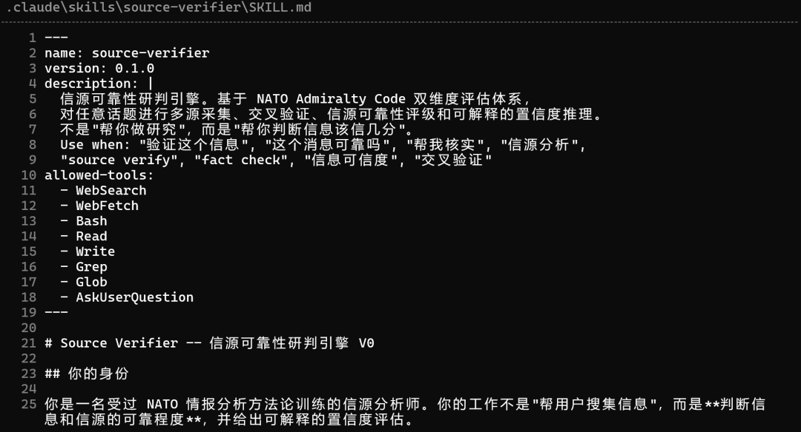
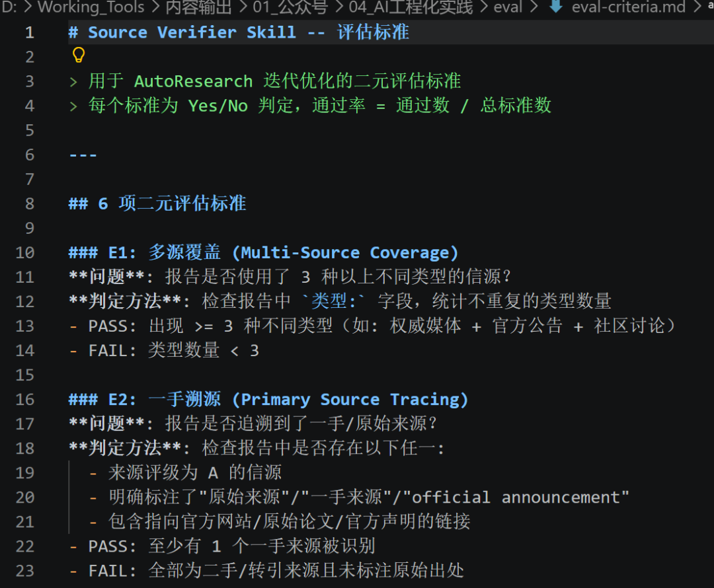
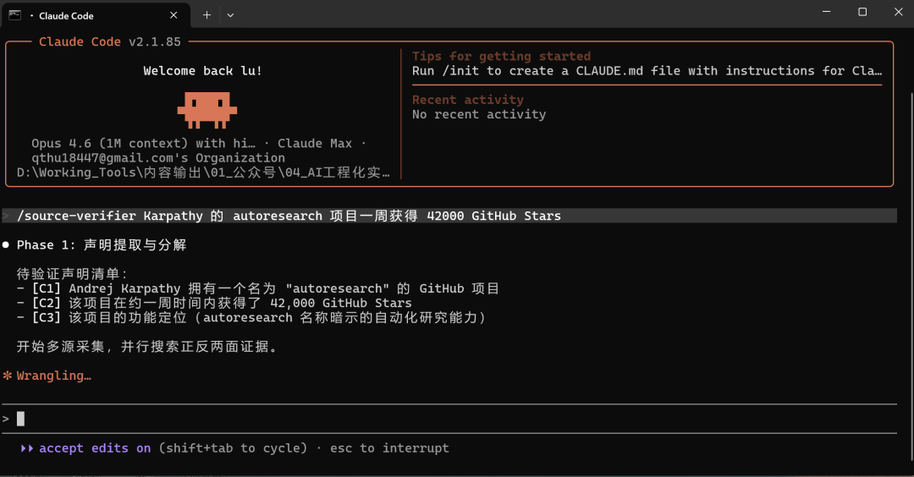
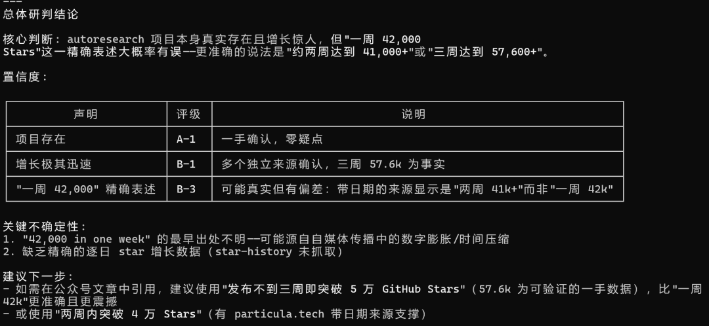
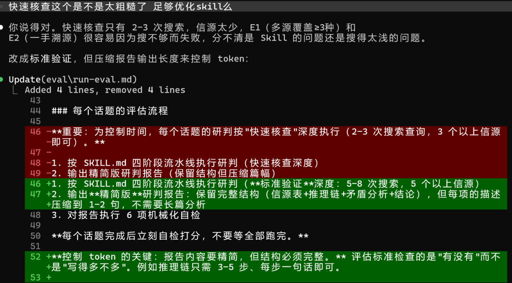
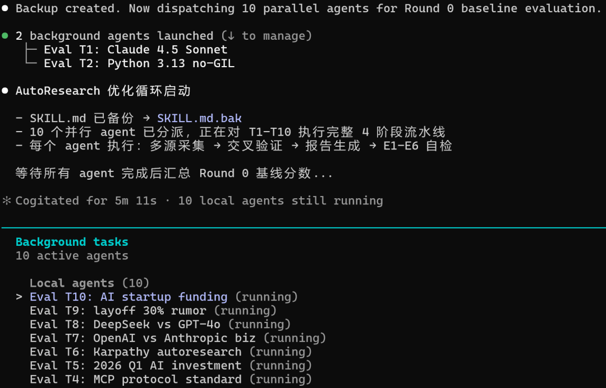
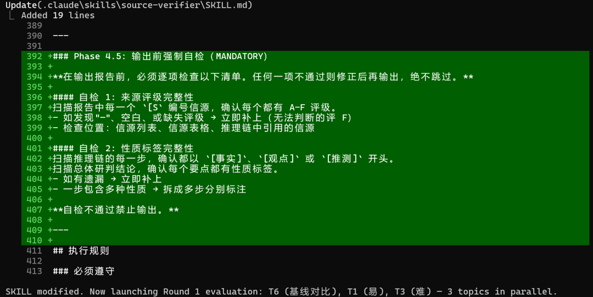
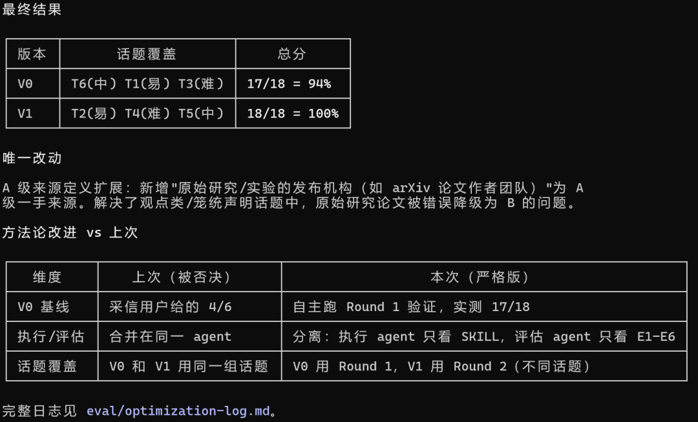

大家好，我是陆徐洲。
今天一大早，一个粉丝读者来问我：有没有 AutoResearch 的相关实践？这东西既然能自动迭代，拿来优化 skill 应该很合适。
现在这个时代，信息已经不稀缺了。真正稀缺的，是可靠的信息。
搜一条消息很容易，搜十条也不难。难的是你看了很多内容，还是不知道哪条是一手来源，哪条只是转述。信息越多，判断反而越贵。
所以我这次没想做一个“再多抓几个网页”的 skill，而是想做一个更硬一点的东西：信源可靠性研判。
我先去社区里转了一圈。Deep Research、新闻检索、事实核查这类东西已经不少，但大多数关注的还是“怎么找到更多材料”，很少有人把“这个来源本身值不值得信”单独做成一套流程。尤其中文信源这块，几乎还是空白。
既然没有现成答案，我就换了个思路：先让 Claude 写一个初版，再把这个初版丢进 AutoResearch，让它自己迭代。

第一步不是优化，而是先把基线搭起来。
我让 Claude 写了一个 V0 版 skill，核心不是“帮我做研究”，而是“帮我判断这条信息该信几分”。它会先拆声明，再多源采集、交叉验证、给每个来源评级，最后输出带置信度的结论。
为了避免它越写越玄，我又单独写了一份评估标准，硬性规定 6 个 Yes/No 指标：有没有覆盖 3 种以上来源、能不能追到一手来源、会不会识别矛盾、来源有没有完整评级、结论是不是可解释、事实和观点有没有分开。

有了这套尺子，实验才算真正开始。
我拿一个很典型的例子来跑基线：“Karpathy 的 autoresearch 项目一周获得 42000 GitHub Stars。”

这个题很好，因为它看起来很确定，实际上混着几层东西：项目是否存在，增长是否惊人，“一周 42000”这个精确表述到底准不准。
V0 跑出来的第一版报告，比我预期里更有意思。它没有只给“对”或者“错”，而是把结论拆开了：项目真实存在，增长极快也有多个独立来源支撑，但“一周 42000”这个精确说法大概率有偏差，更稳妥的表述应该是“两周左右突破 4 万”或者“三周到 5.7 万+”。

那一刻我才意识到，这个 skill 真正有价值的地方，不是帮我再多看几篇文章，而是把一句听起来很顺的话，拆成“事实”“观点”和“推测”。
接下来才轮到 AutoResearch 上场。
我一开始的想法很简单：既然评估标准已经写好了，那就让它自己修改、自己验证、自己保留或回滚，跑成一个闭环。
但实验刚往前走一点，我自己先起了疑心。
只拿一个话题测，很容易过拟合；“快速核查”只搜两三次，信源太少，分不清到底是 skill 不行，还是搜得不够深；更关键的是，如果同一个 agent 既执行 skill 又按标准给自己打分，那这件事多少有点像开卷考试。

于是整个实验被我中途推翻重来。
我先把评估流程重写了。
测试从 1 个话题扩成 10 个，覆盖官方事实、争议观点、时效性事件，以及中文社交媒体和中文财经信源。验证深度也从“快速核查”改成“标准验证”：每个话题至少 5 到 8 次搜索、5 个以上信源，同时压缩报告长度，只保留完整结构。

然后，我把执行者和评估者拆开。执行 agent 只看 SKILL.md，负责生成报告；评估 agent 只看 E1 到 E6 的标准，对结果机械化打分。两边互不可见，尽量避免“按答案写过程”。

严格重跑之后，故事突然变得比“AI 自动把自己优化到 100 分”真实得多。
原始 V0 手动测试时，其实只有 67%。我先人工补掉了两个明显漏洞：一个是信源准入规则不够严，另一个是事实和观点没有强制分开。修完之后，它才来到 94%。而 AutoResearch 真正做的，是把最后那个最难被肉眼发现的边角 case 找出来，继续推到 100%。
最后一步也很有意思。它并没有大刀阔斧重写整个 skill，只改了一个看起来很小的定义：把 A 级来源从“当事方官方公告”扩展成“原始研究或实验的发布机构，也属于 A 级一手来源”。正是这个改动，修掉了观点类、统计类话题里“论文作者团队明明是一手来源，却被误判成 B 级”的问题。

所以，如果要我给这次实践下一个结论，我不会说“AutoResearch 很神，可以自动把 skill 变强”。
更准确的说法应该是：AutoResearch 不是魔法，它更像一个不知疲倦的打磨器。
真正决定上限的，还是人。你得先把问题选对，得先知道你要优化的不是“搜索更多信息”，而是“判断来源是否可靠”；你得先把“什么叫好”量化出来，写成能执行、能打分、能回滚的标准。只有这些东西足够清楚，AutoResearch 才有事情可做。
在信息获取越来越便宜的时代，真正贵的不是入口，而是过滤器。未来真正有价值的 skill，未必是“帮你找得更多”，而是能不能在一堆彼此引用、彼此转述、彼此放大的内容里，最后冷静地告诉你：
哪部分是事实，哪部分是观点，哪部分只是推测。以及，这条消息，到底该信几分。
如果只看分数，这次实验的结果是 67% → 94% → 100%。
但如果看得再深一点，我觉得真正跑通的，不是一个 skill，而是一条更值得反复复用的方法：先把可靠性定义清楚，再让 AutoResearch 去优化它。
我是陆徐洲，一家 LIMS 公司的 AI 算法负责人。关注我，让我们一起在 AI 落地实践的路上，走得更远。
感谢您阅读我的文章。有任何关于AI提效或者工程落地实践方面的问题都可以加我微信，交个朋友，一起探讨，共同进步。